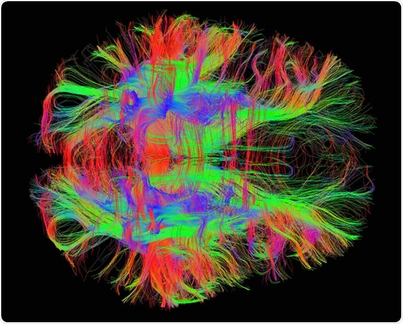

Approximately over 90,000 Canadians live with multiple sclerosis, making Canada one of the highest rates of MS in the world.
Multiple sclerosis (MS) is a neurodegenerative disorder from damage to the myelin sheath of nerve cells. Although not severely affecting life expectancy, it heavily limits patients’ daily lives. The disease is characterized by attacks that induce extreme fatigue, lack of coordination, weakness, tingling, impaired sensation, blurred vision, cognitive impairment, and mood changes. The symptoms of attacks may last for weeks, until recovery. Furthermore, MS is very hard to diagnose. The medical community currently uses the ‘McDonald Criteria’ and performs a variety of tests, evaluating mental, emotional, and neurological functions.
The possible symptoms of multiple sclerosis, which range from mild to severe.
This symptom occurs in about 80% of people and can significantly interfere with the ability to function at home and work.
Numbness of the face, body, or extremities is often the first symptom experienced by those eventually diagnosed as having MS.
Weakness in MS, which results from deconditioning of unused muscles or damage to nerves that stimulate muscles.
Affects the ability to process incoming information, learn and remember new information, organize and problem-solve.
The first symptom of MS for many people. Onset of blurred vision, poor contrast or color vision, and pain on eye movement.
Pain syndromes are common in MS. 55% of people had "clinically significant pain" at some time, and almost half had chronic pain.
One of my biggest goals with this project is that it will both help out communities and inspire others to innovate projects of their own.
A key factor that motivated me to build this project is my personal impact with Multiple Sclerosis. In 2018 I was able to directly experience the severity of late-onset MS after the tragic passing of my grandfather.
Aside from building my project, I have always strived to raise awareness for Multiple Sclerosis, both in my local community and nationally. For example, in 2019 I carried a MS presentation at the set foundation.
One of the most influential factors to the development of my project was the personal connection I had with MS. In short, I did not want others to experience the challenges my family and I had to endure due to the late diagnosis of my grandfather.
One of the biggest goals of this project is to inspire people to innovate their own projects! Through this project, I want to show others that anyone can innovate as long as they are passionate about their work.
A straightforward explantion on the main steps of how my project works. For a more indepth explantion please visit my research paper.

Extracted Mean Diffusivity (MD) and Fractional Anisotropy (FA) from the DTI scans to help determine the Multiple Sclerosis status of a patient.
Used extrapolated Mean Diffusivity and Fractional Anisotropy data to produce a feed-forward Artificial Neural Network.
Finally, the model was both trained, validated and tested. The Artificial Neural Network achieved an impressive accuracy of 97.41%.
Despite the significant amount of functionality behind the model, there are additional steps that can be taken to enhance the project
A priority would be to increase the size of the dataset with samples from multiple regions to diversify the training data to reduce variance.
The end goal of this project is to deploy the application to healthcare and clinical settings through implementing a front-end.
A brief introduction explaining who I am, my strengths and my current interests and passions.
I am a software developer with over 4 years of successful experience in app and web development. Recognized consistently for performance, excellence, and contributions to success in technological industries. Strengths in Mathematics and Algorithms backed by training in scripting.